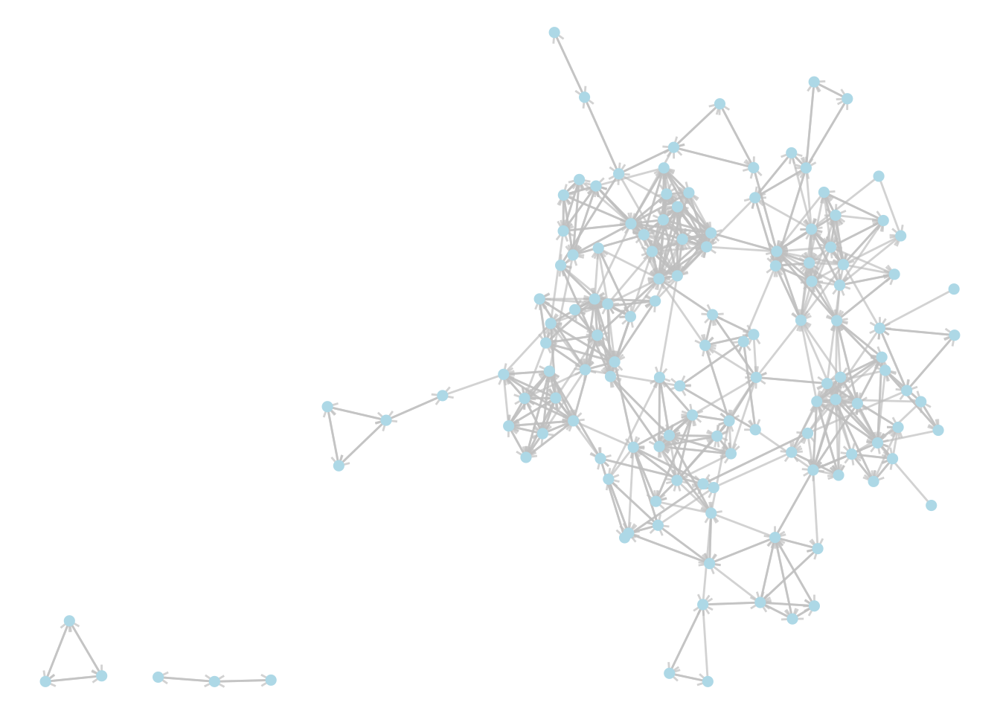

8 Components, Cliques and Communities
The study of group dynamics would be pretty ineffective if we were not able to identify and study important subgroups. Networks of people are often made up of subsets that interact more intensely among each other than they do with the rest of the network, and it is often very important in research and analysis to identify or approximate these subsets as best as possible so that they can be studied more closely. In complex networks, this is not an easy task. Most of the computational methods we have available to us for finding densely connected subsets of vertices (usually called communities) are iterative approximations which make use of heuristics48 and are rarely 100% accurate49. However, in the study of networks in the organizational sciences, we do not need high levels of precision to be able to draw valuable insights, and therefore these modern approximation techniques are very powerful tools for us to have at our disposal.
In the work we have done thus far in the book, we have already been exposed to subgraphs — we have used induced vertex subgraphs containing a specified set of vertices and all edges between them. However, in these situations we were able to specify the precise subset of vertices that we were interested in. In this chapter we will look at methods to identify or ‘detect’ subsets of vertices based on certain properties of the induced subgraphs of those vertices. We will start with simpler problems such as identifying subsets of vertices which are completely disconnected from others, and then we will proceed to look at graph partitioning and the identification of cliques and communities of vertices which, though not disconnected from other parts of the graph, have higher levels of density between each other than with the rest of the network.
8.1 Theory of components, partitions and clusters
8.1.1 Connected components of graphs
We learned earlier that a graph \(G\) is connected if a path exists between any pair of vertices \(u\) and \(v\) in \(G\). If \(G\) is a directed graph, we say \(G\) is weakly connected if it would be connected when viewed as an undirected graph. We say that \(G\) is strongly connected if a path exists from \(u\) to \(v\) for any pair of vertices \(u\) and \(v\) in \(G\). We say \(G\) is unilaterally connected if a path exists either from \(u\) and \(v\) or from \(v\) to \(u\) for any pair of vertices \(u\) and \(v\) in \(G\).
A connected component of a graph is a connected subset of vertices, none of which are connected to any other vertex in the graph. As an example, the undirected graph in Figure 8.1 consists of three connected components, each with three vertices. In the directed graph in Figure 8.2, one component is strongly connected (\(A \longrightarrow B \longrightarrow C \longrightarrow A\)), one is unilaterally connected (\(D \longrightarrow E \longrightarrow F\)) and the third is weakly connected (\(G \longrightarrow I \longleftarrow H\)).

Figure 8.1: A graph with three connected components, each containing three vertices

Figure 8.2: A directed graph with three connected components, one strongly connected, one weakly connected and one unilaterallu connected
Connected components of disconnected graphs are important to identify, because many of the measures we have learned so far break down for disconnected graphs. For example, the diameter of a disconnected graph is defined as infinite by mathematical convention, but this is not a useful practical measure. Usually when we want to know the diameter of a graph, we want to understand that largest finite distance between any two vertices, which translates to the diameter of the largest connected component in the graph. Therefore most calculations of diameter in disconnected graphs require us to be able to identify the largest connected component.
It is not too difficult to think of an algorithm that can determine all the connected components of a graph. If you are interested in this see the exercises at the end of this chapter.
Playing around: Go back and try to find some examples in earlier chapters of graphs that are disconnected, and calculate the diameter that is returned by the functions in R or Python packages. For example, you could try the Random Acts of Pizza graph from the exercises at the end of Chapter 4 or the graph of reported friendships from the schoolfriends data set at the end of the previous chapter. What do these functions return?
8.1.2 Vertex partitioning
Often graphs will be connected but we still want to divide the vertices up into mutually exclusive subgroups of interest. Such a division is called a partition of a graph. In a partition, all vertices must be in one and only one subgroup. Partitions are created through making cuts in a graph.
A cut in a graph \(G\) is a set of edges that divide the vertices of \(G\) into two disjoint subsets. The number of edges is known as the size of the cut. In Figure 8.3, edges e3, e4 and e5 divide the graph into two disjoint connected sets and represents a cut of size 3.
A minimum cut is a cut where no other cut exists in \(G\) with a smaller number of edges. In Figure 8.3, it should not be difficult to see that mimimum cuts have size 1 can be achieved with either e1 or e2. In both cases these minimum cuts divide the graph into a connected component and an isolate50.
Figure 8.3: Cuts are defined by edges that split the vertices of a graph into disjoint subsets
A partition of a graph \(G\) is obtained through a series of cuts. For example, if we make a cut using e3, e5 and e7 in Figure 8.3, we split the graph into two disjoint connected graphs. If we then make a further cut using e1, we split the graph into three disjoint sets: two disjoint connected sets and an isolate.
In directed graphs, cuts can be defined according to the direction of edges, and in weighted graphs, minimum cuts can be determined through the weights of edges. The most popular algorithm for determining the minimum cut of a graph is the Stoer-Wagner algorithm (Stoer and Wagner (1997)).
8.1.3 Vertex clustering and community detection
Vertex clustering refers to the process of partitioning a graph in order to satisfy a certain objective. Most commonly in organizational network analysis, that objective is to achieve a high edge density between the vertices inside a cluster, and a low edge density between vertices that are in different clusters. Such highly connected clusters are usually referred to as communities and the process of determining optimal communities in a graph is knows as community detection51. Community detection is an unsupervised process. When we perform community detection on a graph, we do not know in advance how many communities we seek to find or the size of those communities.
The most commonly used (and fastest) community detection algorithm is the Louvain algorithm. The Louvain algorithm accepts a graph and partitions it into subsets of vertices by trying to maximize the modularity of the graph. Modularity measures how dense the connections are within subsets of vertices in a graph by comparing the density to that which would be expected from a random graph. In an unweighted and undirected graph, modularity takes a value between -0.5 and +1. Any value above zero means that the the vertices inside the subgroups are more densely connected than would be expected by chance. The higher the modularity of a graph, the more connected the vertices are inside the subgroups compared to between the subgroups, and therefore the more certain we can be that the subgroups represent genuine communities. The approximate steps of the Louvain algorithm are in two phases as follows:
- The algorithm starts with each vertex in its own community.
- Vertices are moved into other communities and modularity is calculated.
- When the algorithm reaches a point where further vertex moves do not increase modularity, it finishes its first phase.
- In the second phase, the communities resulting from the first phase are aggregated to form a simpler pseudograph where each vertex represents a community, where loop edges on a vertex are weighted by the total number of edges inside that community, and where edges between vertices are weighted by the total number of edges between those communities52. In this heuristic step, vertices are moved in this simpler graph with the aim of improving modularity. That is, communities may be combined if modularity is improved.
- Phases 1 and 2 are repeated until modularity cannot be further improved.
A more recently developed community detection algorithm which improves on the Louvain algorithm is the Leiden algorithm. The Leiden algorithm operates similarly to Louvain, but has an additional refinement process at the end of the first phase which helps increase the options for improved modularity in the second phase. The Leiden algorithm will always achieve results as good as the Louvain algorithm, and in many cases may detect communities which are better connected than those detected by Louvain.
Both the Louvain and Leiden algorithms are good options for performing community detection in an organizational context. However, there are numerous other options, many of which are available in common data science packages. For example, the Girvan-Newman algorithm operates in a very different way by starting with an entire graph and progressively removing important edges to potentially reveal high modularity subgroups. For more detailed reference on the Louvain and Leiden algorithms see Traag, Waltman, and Eck (2019) and for more general insight into a broader range of community detection algorithms, see Yang, Algesheimer, and Tessone (2016).
One important aspect of community detection which is often not understood is that community detection algorithms classify vertices into subgroups, but offer no direct insight into the nature of those subgroups. Further analytic techniques need to be applied to help describe the subgroups in a meaningful way. For example, the subgroups could be compared to known characteristics of the network (such as department in the workfrance graph or class in the schoolfriends graph). We will examine this using an example later in this chapter.
8.1.4 Cliques
A clique is a subset of vertices in an undirected graph whose induced subgraph is complete. That is, the induced subgraph has an edge density of 1. This is best understood as the most intense possible type of community in an undirected graph. A maximal clique is a clique which cannot be extended by adding another vertex. A largest clique is a clique with the greatest number of vertices of all cliques in the graph.
In Figure 8.3, the following are maximal cliques: \(B \longleftrightarrow C\), \(A \longleftrightarrow C\), \(C \longleftrightarrow E \longleftrightarrow F\) and \(C \longleftrightarrow D \longleftrightarrow F\) because no other vertex can be added to these cliques without creating an incomplete graph. \(C \longleftrightarrow E \longleftrightarrow F\) and \(C \longleftrightarrow D \longleftrightarrow F\) are largest cliques because there is no other clique in the graph that has more than three vertices.
Finding a single maximal clique in an undirected graph is not a complex problem and can be done quickly using a standard search algorithm starting on an arbitrary vertex. However, finding maximal cliques of a specified size, or all maximal cliques, as well as finding largest cliques, are problems whose complexity increases with the size and density of a graph. Care should be taken in attempting these algorithms on very large graphs.
Thinking ahead: Go back to the graph of Zachary’s Karate Club in Chapter 4. Can you identify some maximal cliques? What do you think is the size of the largest clique? Thinking about this will give you a sense of how hard the largest clique problem might be on very large graphs. We will use this as an example later in the chapter.
8.2 Components, cliques and communities in R
8.2.1 Finding connected components of disconnected graphs
To illustrate the components() function in igraph we will load up the schoolfriends edgelist dataset from an earlier chapter. We will use reported friendships, create a directed graph and visualize it.
library(igraph)
library(ggraph)
library(dplyr)
# get schoolfriends edgelist
schoolfriends_edgelist <- read.csv("https://ona-book.org/data/schoolfriends_edgelist.csv")
# just use reported friendships
schoolfriends_reported <- schoolfriends_edgelist |>
dplyr::filter(type == "reported")
# create directed graph
schoolfriends_rp <- igraph::graph_from_data_frame(schoolfriends_reported)
# visualize
set.seed(123)
ggraph(schoolfriends_rp) +
geom_edge_link(color = "grey", alpha = 0.7,
arrow = arrow(length = unit(0.2, "cm"))) +
geom_node_point(size = 2, color = "lightblue") +
theme_void()
We can see some connected components in this disconnected graph. We can use the components() function to classify the vertices into the connected components. This function generates a list containing the following vectors:
membership, which is a vector assigning each vertex to a numbered componentcsize, which returns the size of each componentno, which is the number of connected components
Let’s verify the latter two:
# get weakly connected components (mode ignored if undirected)
schoolfriends_components <- igraph::components(schoolfriends_rp,
mode = "weak")
# how many components?
schoolfriends_components$no## [1] 3# size of components
schoolfriends_components$csize## [1] 128 3 3We can use the membership to assign a component property and then visualize with the vertices colored by component, as in Figure 8.4.
# assign component property
V(schoolfriends_rp)$component <- schoolfriends_components$membership
# visualize
ggraph(schoolfriends_rp) +
geom_edge_link(color = "grey", alpha = 0.7,
arrow = arrow(length = unit(0.2, "cm"))) +
geom_node_point(size = 2, aes(color = as.factor(component))) +
labs(color = "Component") +
theme_void()
Figure 8.4: The reported schoolfriends graph color coded by its (weakly) connected components
Playing around: Weakly connected components of a directed graph are easier to spot with the naked eye compared to strongly connected components. Why? Remind yourself of the definition of weakly connected from earlier in this chapter. Try to repeat this analysis to visualize all strongly connected components in the reported schoolfriendsgraph and see the difference.
8.2.2 Partioning and community detection in R
For the next few examples we will return to Zachary’s Karate Club network from Chapter 4. Let’s load up and visualize that directed graph and mark the known leading actors Mr Hi and John A with larger vertices.
# get karate edgelist
karate_edges <- read.csv("https://ona-book.org/data/karate.csv")
# create undirected graph
karate <- igraph::graph_from_data_frame(karate_edges, directed = FALSE)
# color John A and Mr Hi differently
V(karate)$leader <- ifelse(V(karate)$name %in% c("Mr Hi", "John A"), 1, 0)
# visualize
set.seed(123)
ggraph(karate, layout = "fr") +
geom_edge_link(color = "grey", alpha = 0.7) +
geom_node_point(aes(size = as.factor(leader)), color = "lightblue",
show.legend = FALSE) +
theme_void()
Figure 8.5: The karate graph with Mr Hi and John A indicated with larger vertices
Minimum cuts in graphs can be found using the min_cut() function in igraph. This will return the number of edges in the minimum cut, unless you use the value.only = FALSE argument, in which case it will return more information on the cut,
igraph::min_cut(karate, value.only = FALSE)## $value
## [1] 1
##
## $cut
## + 1/78 edge from 141f9ec (vertex names):
## [1] Mr Hi--Actor 12
##
## $partition1
## + 1/34 vertex, named, from 141f9ec:
## [1] Actor 12
##
## $partition2
## + 33/34 vertices, named, from 141f9ec:
## [1] Mr Hi Actor 2 Actor 3 Actor 4 Actor 5 Actor 6 Actor 7 Actor 9 Actor 10 Actor 14 Actor 15 Actor 16 Actor 19
## [14] Actor 20 Actor 21 Actor 23 Actor 24 Actor 25 Actor 26 Actor 27 Actor 28 Actor 29 Actor 30 Actor 31 Actor 32 Actor 33
## [27] Actor 8 Actor 11 Actor 13 Actor 18 Actor 22 Actor 17 John AWe see that a minimum cut exists of size 1 between Mr Hi and Actor 12.
The Louvain community detection algorithm can be run using the cluster_louvain() function. weights can be added as an argument, or will be used by default if the graph has a weight edge attribute (set weight = NA to avoid this). This will produce a list of community groups. The best way to record the resulting community membership is to assign it as a vertex property using the membership() function.
# detect communities using Louvain
communities <- cluster_louvain(karate)
# assign as a vertex property
V(karate)$community <- membership(communities)Before visualizing the communities, we can see how many they are and their size53:
sizes(communities)## Community sizes
## 1 2 3 4
## 6 12 11 5We have four detected communities of varying sizes. As before, we can color code to visualize these, as in Figure 8.6.
set.seed(123)
ggraph(karate, layout = "fr") +
geom_edge_link(color = "grey", alpha = 0.7) +
geom_node_point(aes(size = as.factor(leader), color = as.factor(community)),
show.legend = FALSE) +
theme_void()
Figure 8.6: Communities of the karate graph as detected by the Louvain algorithm
Playing around:. Try playing around with some of the other community detection methods available in igraph using the karate example. How different are the results? For example, try cluster_edge_betweenness() (the Girvan-Newman algorithm) or cluster_infomap() or any other methods that begin with cluster.
8.2.3 Finding cliques in R
The cliques() and max_cliques() function in igraph identifies all cliques or maximal cliques respectively, with a specified maximum or minimum size if desired. It is advisable to specify a size for cliques of interest because otherwise a long list might be returned, including many single node cliques.
max_cliques(karate, min = 5, max = 5)## [[1]]
## + 5/34 vertices, named, from 141f9ec:
## [1] Actor 2 Mr Hi Actor 4 Actor 3 Actor 14
##
## [[2]]
## + 5/34 vertices, named, from 141f9ec:
## [1] Actor 2 Mr Hi Actor 4 Actor 3 Actor 8The largest_cliques() finds all largest cliques in a graph.
largest_cliques(karate)## [[1]]
## + 5/34 vertices, named, from 141f9ec:
## [1] Actor 8 Mr Hi Actor 2 Actor 3 Actor 4
##
## [[2]]
## + 5/34 vertices, named, from 141f9ec:
## [1] Actor 4 Mr Hi Actor 2 Actor 3 Actor 14We see that the maximal cliques of size 5 that we identified are also the largest cliques in the karate graph, and both orient around Mr Hi. The function clique_num() returns the size of the largest clique.
clique_num(karate)## [1] 58.3 Components, cliques and communities in Python
References
Heuristics are methodological ‘shortcuts’ which can vastly reduce the complexity of a problem but usually sacrifice some element of accuracy in doing so.↩︎
Many problems of graph ‘clustering’ — that is, finding partitions of a graph that maximise intra-group density but minimize between-group density — have already been shown to be NP-hard↩︎
Maximum cuts are cuts where no other cuts exist with a greater number of edges. Maximum cuts in graphs are extremely challenging. Luckily, we rarely need them in organizational network analysis.↩︎
The meaning of ‘high’ and ‘low’ edge density is relative and really depends on the nature of the graph, and algorithms will do their best to find communities which maximize the difference between in-community density and cross-community density, even though some or all of these communities may not end up having have particularly high edge density↩︎
This also works with weighted edges, assuming that weights represent ‘closeness’ of connection, which they usually do in organizational contexts.↩︎
We can also see the modularity of the partition by calling the
modularity()function.↩︎